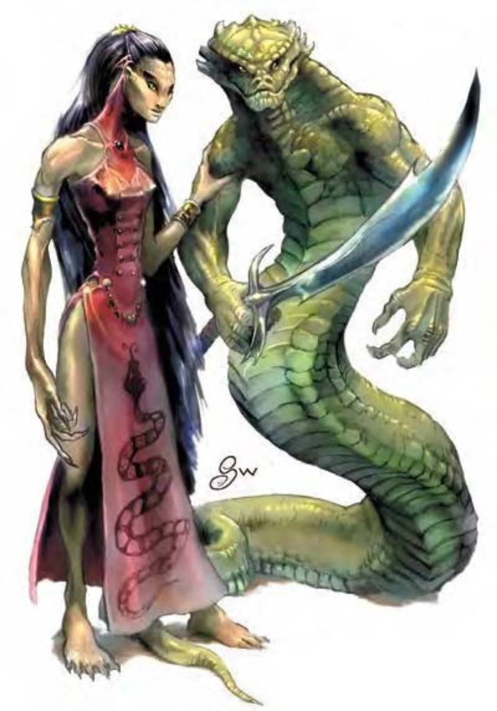

蛇人发源自那些血统中交融有蛇类要素的人类。它们的邪恶、狡诈与残忍使其臭名昭著。
蛇人致力于不断盘算策划以推进自己的黑暗议程。它们工于算计、沉着老练，会在必要时同其他邪恶生物结盟，但总会把它们自身的利益置于首要地位。
所有蛇人都多多少少拥有一些蛇类的特征，许多个体甚至拥有蛇类的身体部位。
蛇人会说属于它们自己的语言，此外还会说通用语、龙语以及深渊语。
战斗蛇人往往天赋异禀，尤以战斗为甚。它们更多偏向于发动突袭而非正面冲突，预先铺设精巧的陷阱，并且在战斗中充分运用来自环境的优势。它们同样更多倾向于远程攻击或施展法术，而非近战。
在混合编组中，价值最低、实力最弱的个体往往会率先发起攻击。这意味着纯血种先于混血种行动，而混血种则先于憎恶种行动。出于战术改良的需要，班组领导也可以命令特定的成员提前行动。
变化形态Alternate Form（Sp）：所有蛇人都可以凭借自己的心灵异能变化为体型在超小型到大型之间的蝰蛇（参见蛇类条目，第280页）。蛇人将会失去自己的天生武器（如果原本拥有的话），并获得其变化对象拥有的天生武器。如果蛇人原本拥有附带毒素的啮咬攻击，则将使用自身或是蝰蛇所有的毒液，以毒性更强者为准。
侦测毒素Detect Poison（Sp）：所有蛇人都具备侦测毒性这一等效于同名法术（施法者等级6级）的心灵异能。
蛇人角色蛇人纯血种与混血种的偏好职业是巡林客。憎恶种的偏好职业是牧师。蛇人牧师崇拜梅尔绍克Merrshaulk，其偏好武器为长剑。蛇人牧师可以从以下领域中任选两个：混乱，邪恶，破坏，或植物。
蛇人的社会蛇人是虔诚的邪恶信徒。它们同时也会高度尊重所有的爬行生物。
蛇人的生活中心是它们的神殿，它们的仪式经常都会涉及血腥的牺牲。它们更多倾向于居住在那些偏远的古老废墟之中，但也有在人类城市地底建造聚落的记录。蛇人总是对它们城市或是神殿的位置严加保密。它们的建筑设计偏爱使用曲线，通常会用坡道和杆柱取代楼梯。
作为神殿领袖的憎恶种统治着蛇人的社会，高等祭司的权利高于一切。纯血种负责对外谈判，总是伪装成人类的外表。
蛇人的主神是梅尔绍克，是它促成并一手指导了蛇人血脉的构成形态。
| 生命骰： | 4d8 (18HP) |
| 先攻： | +5 |
| 速度： | 30英尺 (6格) |
| 防御等级： | 17 (+1敏捷、+1天生、+3精制镶嵌皮甲、+2精制重型盾)、接触11、措手不及16 |
| 基本攻击/擒抱： | +4 / +4 |
| 攻击： | 精制弯刀+5近战 (1d6 / 18-20)；或精制长弓+6远程 (1d8 / x3) |
| 全力攻击： | 精制弯刀+5近战 (1d6 / 18-20)；或精制长弓+6远程 (1d8 / x3) |
| 占据/触及： | 5英尺 / 5英尺 |
| 特殊攻击： | 类法术能力 |
| 特殊能力： | 黑暗视觉60英尺、“侦测毒性”、法术抗力14 |
| 豁免： | 强韧+1、反射+5、意志+4 |
| 属性： | 力量11、敏捷13、体质11、智力12、感知10、魅力12 |
| 技能： | 专注+7、易容+4*、躲藏+3、知识(任一)+5、聆听+4、侦察+4 |
| 专长： | 警觉B、盲战B、闪避、精通先攻 |
| 环境： | 热带森林 |
| 组织： | 单独、成双、成队 (3-4)、行列 (2-13个纯种蛇人、2-5个混血蛇人及2-4个妖蛇人) 或一族 (20-160个纯种蛇人、10-80个混血蛇人及10-40个妖蛇人) |
| 挑战级数： | 3 |
| 宝藏： | 双倍标准 |
| 阵营： | 通常混乱邪恶 |
| 进化： | 视人物职业而定 |
| 等级修正值： | +2 |
大体来看，这个生物像是臀部扁平、身形瘦长、五官深邃、眼睛眨也不眨的人类。然而仔细观察之下，会发现它的舌头分叉，牙齿尖利，颈部和四肢甚至生有细小的鳞片。纯种蛇人外貌近似人类，具有某些不明显的蛇类特征。纯种蛇人身高体重都接近人类。
战斗比起其他蛇人族，纯种蛇人的智力最低，但仍超过一般人类，而且他们也深深以此为荣。纯种蛇人通常会伪装成人类，混居在人群中充当奸细，为妖蛇人主子卖命。
类法术能力：每天1次――“迷惑动物” (DC=13)、“惊恐术” (DC=12)、“魅惑人类” (DC=12)、“黑暗术”、“纠缠术” (DC=12)。施法者等级4，豁免检定DC的调整值与魅力调整值相同。
技能：*伪装成人类时，纯种蛇人进行“易容”检定具有+5种族加值。
― 纯种蛇人人物具有下列种族特性：
― +2敏捷、+2智力、+2魅力。
― 中型。
― 纯种蛇人的基本行走速度为30英尺。
― 黑暗视觉可达60英尺。
― 种族生命骰：纯种蛇人起始为4级人形怪物，生命骰4d8、基本攻击加值+4、强韧、反射与意志的基本豁免检定则分别是+1、+4及+4。
― 种族技能：纯种蛇人的人形怪物等级使它的技能点数为7 x (2+智力调整值)。它的本职技能为专注、易容、躲藏、知识 (任一)、聆听与侦察。
― 种族专长：纯种蛇人的人形怪物等级具有两个专长，除此之外还具有“警觉”和“盲战”两项额外专长。
― +1天生防御加值。
― 天生武器：抵撞 (1d8)。
― 特殊攻击 (见前文)：类法术能力。
― 特殊能力 (见前文)：化形、侦测毒性、法术抗力=职业等级+14。
― 母语：蛇人语、通用语。额外语言：深渊语、龙语。
― 适合职业：巡林客。
― 等级修正值：+2
| 生命骰： | 7d8+7 (38HP) |
| 先攻： | +5 |
| 速度： | 30英尺 (6格) |
| 防御等级： | 20 (+1敏捷、+4天生、+3精制镶嵌皮甲、+2精制重型盾)、接触11、措手不及19 |
| 基本攻击/擒抱： | +7 / +9 |
| 攻击： | 精制弯刀+10近战 (1d6+2 / 18-20)；或精制复合长弓 (+2力量加值) +9远程 (1d8+2 / x3) |
| 全力攻击： | 精制弯刀+10 / +5近战 (1d6+2 / 18-20) 及 啮咬+4近战 (1d6+1附加毒素)；或精制复合长弓 (+2力量加值) +9 / +4远程 (1d8+2 / x3) |
| 占据/触及： | 5英尺 / 5英尺 |
| 特殊攻击： | 毒素、“分泌强酸”、类法术能力 |
| 特殊能力： | 化形、变色、黑暗视觉60英尺、侦测毒性、灵敏嗅觉、法术抗力16 |
| 豁免： | 强韧+3、反射+6、意志+9 |
| 属性： | 力量15、敏捷13、体质18、智力18、感知18、魅力16 |
| 技能： | 专注+11、手艺或知识(任二)+14、躲藏+10*、聆听+16、侦察+16 |
| 专长： | 警觉B、盲战B、寓守于攻、闪避、精通先攻 |
| 环境： | 热带森林 |
| 组织： | 单独、成双、成队 (3-4)、行列 (2-13个纯种蛇人、2-5个混血蛇人及2-4个妖蛇人)，一族 (20-160个纯种蛇人、10-80个混血蛇人及10-40个妖蛇人) |
| 挑战级数： | 5 |
| 宝藏： | 双倍标准 |
| 阵营： | 通常混乱邪恶 |
| 进化： | 视人物职业而定 |
| 等级修正值： | +5 |
这个生物像是身形瘦长、五官深邃、眼睛眨也不眨的人类，体表布满发亮的鳞片，头部从肩膀高高伸起，跟蛇一样，有分岔的舌头和细长的尖牙。
跟纯种蛇人一样，混血蛇人外貌近似人类，但具有明显的蛇类特征，各种毒蛇的特征都有可能出现在混血蛇人身上，如：眼镜蛇的匙状颈部或是响尾蛇背上的菱形花纹。具有相同毒蛇特征的蛇人通常会组成行列，这也是蛇人族中的地位象征。混血蛇人身高体重都接近人类。
战斗混血蛇人通常会让纯种蛇人先发动攻击，自己则利用变色能力躲藏在后面避免陷入近战，并施展类法术能力削弱敌人。直到纯种蛇人伤亡殆尽，混血蛇人才会发动近战攻击。
毒素 (特异)：每次造成伤害后，混血蛇人就会注入毒素 (强韧检定的DC=14)。初始伤害与后续伤害均为1d6点体质伤害。豁免检定DC的调整值与体质调整值相同。
分泌强酸 (类法术能力)：混血蛇人的身体具有能分泌强酸的灵能力。使用此能力之后，会对下一个接触到的生物造成3d6点强酸伤害，被啮咬攻击命中的生物也算。若使用此能力时，混血蛇人正在擒抱或压制敌人，该敌人会受到5d6点强酸伤害。一旦脱离混血蛇人的身体，强酸就不再具有伤害力。而且这种强酸不会对蛇人族造成伤害。
类法术能力：每天3次――“迷惑动物” (DC=15)、“惊恐术” (DC=14)、“纠缠术” (DC=14)；每天1次――“深幽黑暗术”、“中和毒性” (DC=17)、“暗示” (DC=16)。施法者等级8。豁免检定DC的调整值与魅力调整值相同。
变色 (类法术能力)：混血蛇人具有改变体表和装备颜色，使其与环境一致的灵能力，在进行“躲藏”检定时具有+10环境加值。
以上数据已经可以包含大部分具有蛇类头部、鳞片和人类躯干的混血蛇人。然而，蛇人族的诅咒还会造成各式各样不同蛇类特征的混血蛇人。若要随机创造混血蛇人，请掷百分骰然后依结果对照下表。
| 百分骰 | 混血蛇人变体 |
|---|---|
| 01-40 | 如上所述 |
| 41-60 | 人类头部，但手臂是蛇（能够进行两次而非一次啮咬攻击，可造成的伤害为1d4+2附加毒素）。 |
| 61-80 | 下半身除了双腿之外还长出一条蛇尾（速度30英尺，游泳15英尺，可以对小型以下的生物进行紧勒攻击，造成1d4+3点伤害）。 |
| 81-100 | 下半身是蛇尾而非双腿（速度20英尺，攀爬15英尺，游泳15英尺，可以对中型以下的生物进行紧勒攻击，造成1d6+3点伤害）。 |
紧勒 (特异)：一旦通过擒抱检定，具有蛇尾的混血蛇人就能对体型够小的生物造成额外伤害（若同时具有双腿，可造成1d4+3点伤害。没有双腿则可造成1d6+3点伤害）。
| 生命骰： | 9d8+27 (67HP) |
| 先攻： | +5 |
| 速度： | 30英尺 (6格)、攀爬20英尺、游泳20英尺 |
| 防御等级： | 22 (-1体型、+1敏捷、+10天生、+2精制重型盾)、接触10、措手不及16 |
| 基本攻击/擒抱： | +9 / +17 |
| 攻击： | 精制弯刀+13近战 (1d8+4 / 18-20)；或精制复合长弓 (+4力量加值) +10远程 (2d6+4 / x3) |
| 全力攻击： | 精制弯刀+13 / +8近战 (1d8+4 / 18-20) 及 啮咬+7近战 (2d6+3附加毒素)；或精制复合长弓 (+4力量加值) +10 / +5远程 (2d6+4 / x3) |
| 占据/触及： | 10英尺 / 10英尺 |
| 特殊攻击： | 憎恶、紧勒、1d6+6、精通擒抱、毒素、“分泌强酸”、类法术能力 |
| 特殊能力： | 化形、变色、黑暗视觉60英尺、“侦测毒性”、灵敏嗅觉、法术抗力18 |
| 豁免： | 强韧+6、反射+7、意志+11 |
| 属性： | 力量19、敏捷13、体质17、智力20、感知20、魅力18 |
| 技能： | 专注+15、手艺或知识(任二)+17、躲藏+8*、聆听+19、潜行+12、侦察+19 |
| 专长： | 警觉B、盲战B、寓守于攻、闪避、精通先攻、灵活移动 |
| 环境： | 热带森林 |
| 组织： | 单独、成双、成队 (3-4)、行列 (2-13个纯种蛇人、2-5个混血蛇人及2-4个妖蛇人) 或一族 (20-160个纯种蛇人、10-80个混血蛇人及10-40个妖蛇人) |
| 挑战级数： | 7 |
| 宝藏： | 双倍标准 |
| 阵营： | 通常混乱邪恶 |
| 进化： | 视人物职业而定 |
| 等级修正值： | +7 |
妖蛇人看起来就像一只巨大的蛇，但眼中闪烁着邪恶的光芒，而且只有两只像人类一样的粗壮手臂。妖蛇人是生有像人类一样手臂的蛇形怪物。各种毒蛇的特征都有可能出现妖蛇人身上，例如：黑曼巴蛇的黑色透亮鳞片或是毒蛇三角形的头。具有相同毒蛇特征的蛇人通常会组成行列，这也是蛇人族中的地位象征。妖蛇人长8到15英尺，重200到300磅。
战斗妖蛇人是蛇人族部族的主将，通常待在战线后方指挥其他低等的同类作战。战斗中，妖蛇人会仔细分析情势，找出最危险的敌人及其最具有杀伤力的攻击方式，然后试图以本身的法术和灵能力来对付这些难缠角色。
憎恶（类法术能力）：妖蛇人可以用灵能针对30英尺内一个敌人产生胁迫效果。目标生物必须通过意志检定（DC=22），否则就会异常憎恶蛇类，持续时间10分钟。受害者无法接近蛇类或蛇人身边20英尺，无论死的还是活的都一样。施此能力攻击时，如果20英尺内有蛇类或蛇人，受害者会试图移开。若无法移开或遭到蛇类或蛇人攻击，则可以克服憎恶的效果。受害生物的敏捷值会下降4点，直到效果结束或者离开蛇类或蛇人身边20英尺为止。除上述说明之外，此能力与“嫌恶术”效果相同（施法者等级16），豁免检定DC的调整值与魅力调整值相同。
紧勒 (特异)：一旦通过擒抱检定，妖蛇人即可造成1d6+6点伤害。
精通擒抱 (特异)：当妖蛇人啮咬到大型以下的对手时，即可利用即时动作进行啮咬攻击（视为擒抱），且会引发对方借机攻击。如果啮咬成功，则可定住对手并进“紧勒”。
毒素 (特异)：每次造成伤害后，妖蛇人就会注入毒素（强韧检定的DC=17）。初始伤害与后续伤害均为1d6体质伤害。豁免检定DC的调整值与体质调整值相同。
分泌强酸 (类法术能力)：妖蛇人的身体具有能分泌强酸的灵能力。使用此能力之后，会对下一个接触到的生物造成3d6点强酸伤害，被啮咬攻击命中的生物也算。若使用此能力时，妖蛇人正在擒抱或压制敌人，该敌人会受到5d6点强酸伤害。一旦脱离妖蛇人的身体，强酸就不再具有伤害力。而且这种强酸不会对蛇人族造成伤害。
类法术能力：随意施展――“迷惑动物”(DC=16)、“纠缠术”(DC=15)；每天3次――“深幽黑暗术”、“中和毒性”(DC=18)、“暗示”(DC=17)；每天1次――“化泥变形”(DC=19, 只能变成蛇类形态)、“恐惧术”(DC=18)。施法者等级10。豁免检定DC的调整值与魅力调整值相同。
变色 (类法术能力)：妖蛇人具有改变体表和装备颜色，使其与环境一致的灵能力，在进行“躲藏”检定时具有+10环境加值。
技能：妖蛇人在进行“攀爬”检定时具有+8种族加值。即使被冲撞或受威胁，他们在进行“攀爬”检定时都可以随时取10。
妖蛇人在进行任何特殊动作或闪身避祸时，“游泳”检定具有+8种族加值。即使分心或受困，他们在进行“游泳”检定时都可以随时取10。若以直线前进，则可在游泳时进行奔跑动作。
*使用“变色”能力时，妖蛇人进行“躲藏”检定具有+10环境加值。